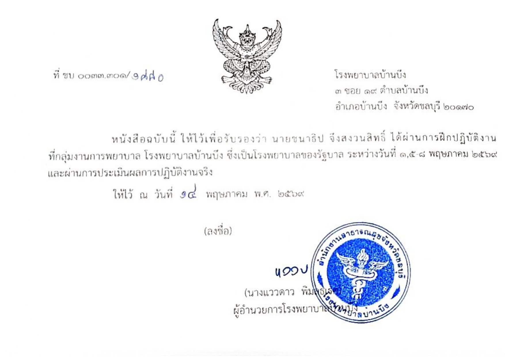

ทักษะและความสามารถ
โครงงาน
โครงงานตรวจโรคจากดวงตาด้วยAI
📅 ปีการศึกษา2568โครงงานนี้มีวัตถุประสงค์เพื่อศึกษาการพัฒนาแอปพลิเคชันตรวจคัดกรอง สุขภาพตาผ่านแพลตฟอร์ม Telegram โดยประเมินประสิทธิภาพในการตรวจ ความผิดปกติของดวงตา การให้คำแนะนำเบื้องต้นและผลของพฤติกรรมการ ใช้อุปกรณ์ดิจิทัลต่อสุขภาพของตา
ขั้นตอนการดำเนินงาน 1. ตั้งหัวข้อที่ในกลุ่มสนใจและเสนอกับครูผู้สอน 2.แบ่งหน้าที่ภายในกลุ่มเพื่อรวบรวมข้อมูลเกี่ยวกับโรคทางดวงตาและโปรแกรมที่ต้องการใช้ เนื่องจากแอพพลิเคชั่น ที่ใช้ต้องใช้แชทบอทซึ่งบางแอพเสียเงิน เราจึงเลือกใช้แอพพลิเคชั่น Telegram 3. ศึกษาวิธีการใช้โปรแกรม Visual Studio Code และแอพพลิเคชั่น Teregram 4.เริ่มศึกษาวิธีเขียนโค้ดในโปรแกรม Visual Studio Code แล้วเชื่อมต่อกับแอพพลิเคชั่น Teregram 5. สร้างแบบฟอร์มคัดกรองโรคเพื่อเพิ่มความแม่นยำและสร้างแบบประเมินความพึงพอใจ 6.ทดสอบโดยทีมพัฒนาและกลุ่มตัวอย่างแล้วปรับปรุงแก้ไขข้อผิดพลาดที่เกิดขึ้น 7. นำเสนอวิธีการใช้งานและเผยแพร่โครงงาน
การฝึกประสบการณ์ที่โรงพยาบาลบ้านบึง/h3> 📅 ปีการศึกษา2568

กิจกรรม / เกียรติบัตรที่ได้รับ
รายการเกียรติบัตรและรางวัล
รายการกิจกรรมและเกียรติบัตรที่ได้รับตลอดช่วงการศึกษา